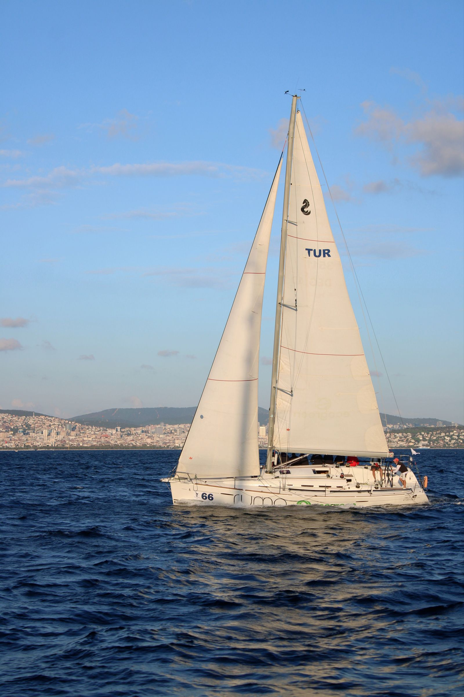

Case 01 — BNA 24 “Meridian”
The brief
An Atlantic circuit boat for two, with grandchildren aboard for school holidays: Cowes to the Caribbean and back, short-handed, no professional crew. The owners had owned a production 46-footer and knew exactly which brochure numbers had lied to them. Their instruction to us was one sentence: “Design the boat you can defend in writing.”
Decisions
Aluminium over composite — heavier, and we said so, but repairable in any port with a welder. A fixed fin keel over a lifting keel: fewer failure modes for a crew of two. The sail plan sized for two people reefing at 02:00, not for a racing crew: 312 m² upwind, powered winches with a manual override that is actually reachable. Every prediction issued with its load case and sea state attached.
Outcome
Launched June 2023. The inclining experiment put her 1.3% over design displacement — inside the ±2% we contract, and printed anyway. Under power she is 0.3 of a knot slower than predicted; that figure, not the prediction, is the one on Sheet 01. First season: 6,200 nm, Cowes–Azores–Caribbean, two aboard for 80% of it. One warranty item: a windlass solenoid, replaced by the yard in Horta.

| Displacement, half load | 31.2 t |
|---|---|
| Top speed under power | 10.4 kn |
| Range at 7.5 kn | 780 nm |
| Angle of vanishing stability | 124° |
| Displacement, half load | 31.6 t (+1.3%) |
|---|---|
| Top speed under power | 10.1 kn (−0.3 kn) |
| Range at 7.5 kn | 759 nm (−21 nm) |
| Angle of vanishing stability | 122° (−2°) |
Conditions: measured figures from the handover inclining experiment and two-way measured-mile runs, half load, clean bottom, sea state 2. The deltas are what a ±2% weight contract and honest prediction look like in practice — small, and in print.